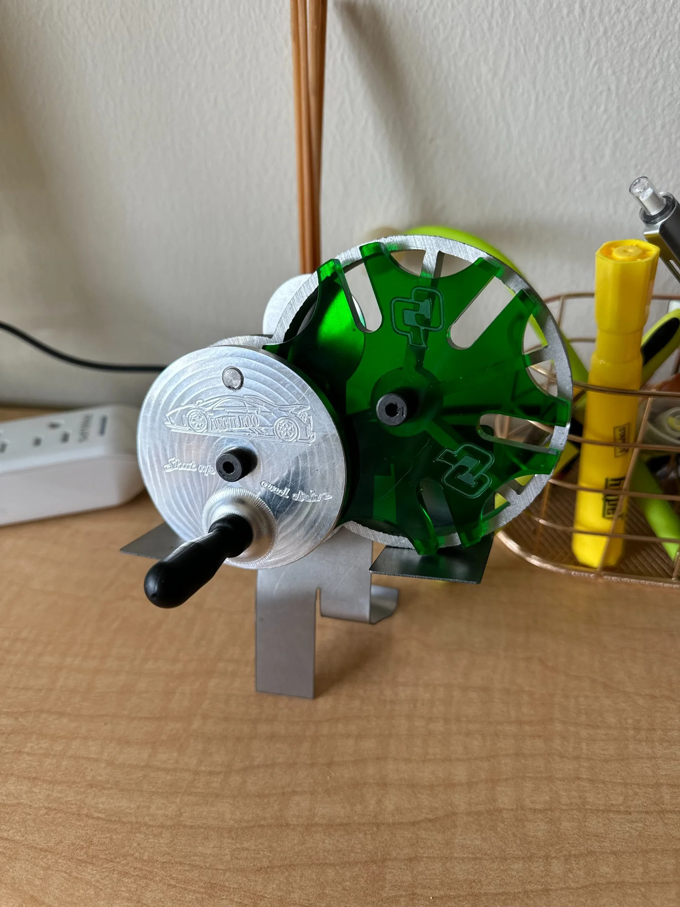
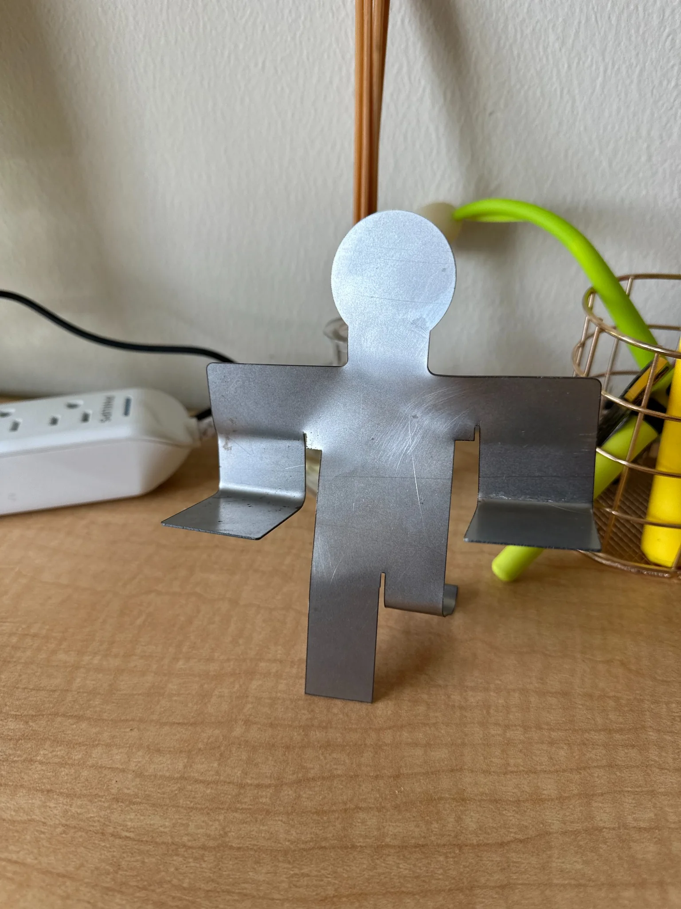
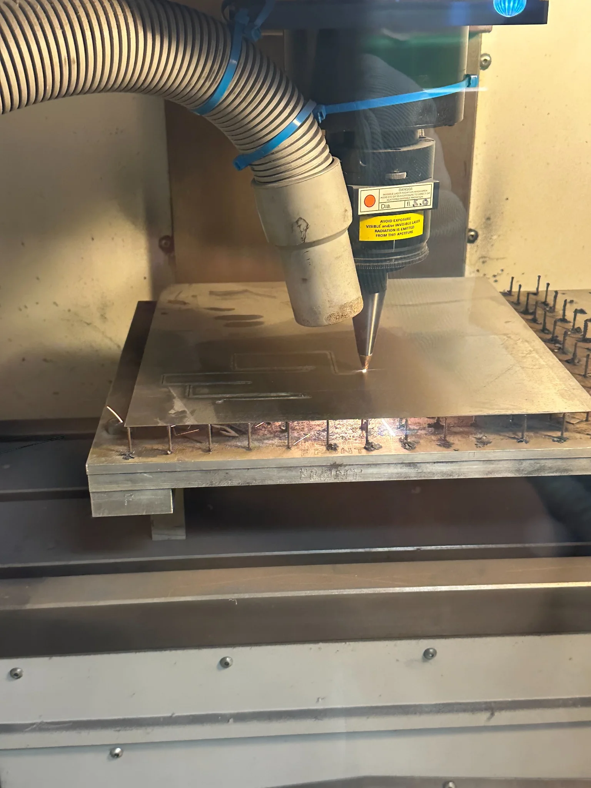

Designed to interface.
Understand how mating geometry and component clearances influence mechanical assembly and movement.
04 / IME 244 · MECHANICAL ASSEMBLY · CAL POLY
A multi-process mechanical assembly featuring a custom person-shaped metal holder that I personally designed and customized to support the Geneva wheel.


A Geneva mechanism relies on multiple components working together—not just as individual parts, but as a correctly fitted assembly.
In Cal Poly's IME 244 course, this multi-week project was structured to connect CAD modeling, part manufacturing, dimensional interpretation, and final assembly. The course brief emphasized modeling complex mechanisms, understanding assembly fits, interpreting GD&T, and evaluating tolerance stack-up.
The photographed assembly brings together a slotted wheel, rotating driver, and supporting structure. My individual design contribution was the person-shaped holder beneath the mechanism, which I customized to give the project a more personal identity.
02 / MY DESIGN CONTRIBUTION
I personally designed the person-shaped metal holder that supports the Geneva wheel assembly.
The figure represents me holding up the mechanism. I incorporated custom details into the holder so that it would be more than a standard support: it became a recognizable, personal element of the finished project.
The photographed standalone piece shows the holder before assembly; in the completed mechanism, the formed arms support the wheel and crank components. The other manufacturing steps shown below describe the broader IME 244 course project.
Understand how mating geometry and component clearances influence mechanical assembly and movement.
Read geometric tolerances and use drawing requirements to guide manufacturing and inspection.
Consider how part-level dimensional variation accumulates when several components must work together.
04 / COURSE MANUFACTURING SEQUENCE
The IME 244 project brief organized the work into weekly activities, each focusing on a different component or manufacturing method.
CAD & assembly fits
Model the Geneva drive mechanism and evaluate mechanical interfaces.
CNC & CAM
Program and machine the Geneva drive wheel using 2- and 3-axis milling.
Injection molding
Design and manufacture the drive handle with mold tooling.
Laser processing
Engrave and cut components of the Geneva wheel.
Waterjet cutting
Cut the mechanism's base component.
Assembly & tolerance stack-up
Bring the parts together and analyze the dimensional relationships.

05 / DESIGN + MANUFACTURING
This project connects several ways of making parts with a central mechanical engineering question: will the pieces fit and function together? A working assembly depends on the accuracy of individual features as well as the relationships among them.
My person-shaped holder gave the mechanism a customized support, while the wider IME 244 project combined CAD, machining, molding, laser processing, waterjet cutting, and assembly. Final inspection measurements are not provided in the course brief, so no measured performance is claimed here.
View IME 244 project brief